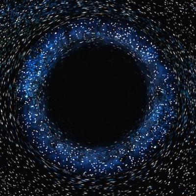

Back in 2008, just months before the European Organization for Nuclear Research (CERN) completed work on the world’s largest and most powerful particle accelerator, two men, Walter Wagner and Luis Sancho, filed a lawsuit to stop it. Their claim? That if CERN's Large Hadron Collider (LHC) succeeded in its goal of smashing together tiny particles at extremely high speeds, it would create a black hole and cause the total annihilation of the Earth. Their implication was clear: The LHC would be bad for business.
The suit was filed in Hawaii, whose jurisdiction over intergovernmental European organizations is, well, questionable. Perhaps intrigued by the possibility of free pineapples, an independent Safety Assessment Group was formed to look into the matter. Their report cited no basis for concern, stating "Nature has already conducted the equivalent of about a hundred thousand LHC experimental programs on Earth already – and the planet still exists.” The project moved forward. The LHC was fired up and... it worked. Zoom, zoom, bang, bang, ooh, ooh. The result of this success was, to the good fortune of entrepreneurs and other living things, not a planet-killing vacuum but a first glimpse of the elusive Higgs boson.
History may look upon Walter Wagner and Luis Sancho as a bit alarmist. Their case was dismissed and the LHC has operated for several annihilation-free years. But in their panic, there is perhaps also wisdom: Lean methodology emphasizes the importance of agility and adapting after failure, of running postmortems, of asking the 5 Whys. What Wagner and Sancho teach us is to prepare not just for when we are wrong, but also when we are right. They remind us fatal consequences can ensue if we do not also prepare for what happens when we succeed.
Growing companies are increasingly adept at looking out for and embracing failure. Fail fast, fail often. During development, CERN suffered frequent setbacks and failures. At one point, the LHC nearly melted down when a bird dropped a baguette into a cooling unit. The team worked methodically through each obstacle and mistake, learning and adapting until they succeeded at bringing the new system online. But Wagner and Sancho never asked what would happen if the LHC didn’t work. They weren’t worried about cost overruns, schedule slippage or faulty electrical connections. What kept Wagner and Sancho up at night was fear that humanity was not prepared for the consequences of CERN’s success. Think about your upcoming marketing campaign, the deployment of your new infrastructure, or release of an exciting new feature. You have iterated and learned and are poised to reap your rewards. Are you really prepared for what happens next?
Assume it all succeeds brilliantly. Can you support a massive influx of new customers? Or will the huge volume destroy your great service and fast fulfillment and ruin your reputation? The new infrastructure may be secure and reliable, but how will it affect your day-to-day business workflow? Almost certainly it will change how your people and teams work together. Newly empowered teams can overwhelm departments that seemed solid in the past. Bottlenecks often shift rather than disappear and the old annoyance becomes a lethal blockage.
Wagner and Sancho teach us to ask these questions. Your organization may not be building a giant atom smasher, but worlds will most certainly collide. You’ve focused hard on things that could go wrong. You’ve learned to face, accept, and learn from failure. Against improbable odds your team has broken through every barrier. Learn from CERN - before flipping that switch, create your own Safety Assessment Group and focus on what happens next if everything goes as planned. You’re almost there. Stop. Are you really ready? The unexpected outcome might not be a planet-swallowing black hole, but it could be just as fatal to your business.
Originally posted at ExitEvent